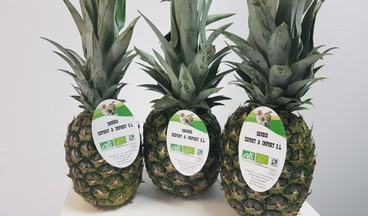
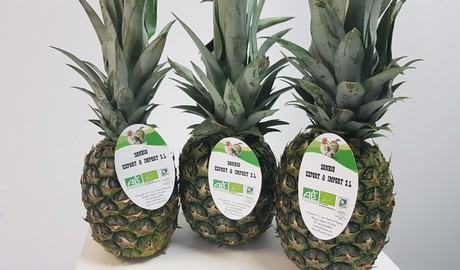

STORIED MULTIVERSE OVERVIEW
Nugzar Margvelashvili, Hobart, August 2018
Last updated July 2019
This document provides a brief overview of the storied multiverse - a theoretical framework overarching individual belief systems and aiming at resolving major contradictions between these systems. Having this framework established, we must be able to claim not only one, but the whole range of different belief systems to be true simultaneously. As a general principle, guiding the development of this multiverse framework (or a multiverse theory, or a hypothesis, if you like) we will require it to be based on theories which make sense to us, which seem to be reasonable. On the other hand, I wouldn’t mind us having some fun playing with unconventional ideas, the ideas that may stretch the limits of what we consider reasonable and challenge established stereotypes and paradigms.
One of such ideas or hypotheses underpinning this project is that there are many, may be infinite, number of ways we can describe ourselves and the world around us and many of these descriptions could be both intellectually plausible and psychologically appealing. In other words, we can design new belief systems such that they don’t require us to believe impossible things, on the one hand, and on the other hand, we don’t have to sacrifice our well-being by succumbing to a single universal “truth” telling us, for example, that we are just a meaningless chunks of dirt lost in an empty, cold universe. To reiterate, the hypothesis is that if we don’t like a particular description of the world, we can design an alternative, intellectually not less plausible but psychologically more appealing interpretation of it. This interpretation does not have to be unique. Analogous to the infinite number of ways one can write a novel, there could be many different descriptions of ourselves and the world around us. A storied multiverse, presented below, is an attempt to develop one of such alternative descriptions.
Building such a multiverse must be fun - journey into the unknown. Besides that, I believe, many problems we have today are due to the inherently wicked nature of a human being. Changing this human nature is equivalent to creating the whole new world.
There are a number of assumptions specific to our multiverse which we will take for granted, without questioning them too much. One of those is an assumption of a superpositional nature of macroscopic, big objects residing in this multiverse. Let me explain it. Let’s assume there is a cat in a closed box, we cannot see through this box, and we don’t know whether this cat is dead or alive. Since we don’t have such knowledge, we assume this cat to be neither alive nor dead, but to exist in a special state of a superposition of both the dead cat and the alive cat. This superpositional state persists, until someone opens that box to find this cat to be either dead or alive. This observer, a person who opens the box, by making an observation turns this superpositional cat back into the conventional state of the cat being either dead or alive.
Ok, I believe, you have guessed by now, this is the description of a famous thought experiment introduced many years ago by a physicist Schrodinger. According to the original interpretation of this experiment, the superpositional state was attributed to the uncertainty of the microscopic world, the world of the very small tiny objects, which behavior is governed by the laws of the quantum mechanics (and which may exhibit a very peculiar behavior). According to this original vision, a superpositional state is introduced through the propagation of the uncertainty from the world of the microscopic objects into the world of relatively big, macroscopic objects.
Whatever. We are not going to dwell on the theory of quantum mechanics here. Instead, we will stick with the storied multiverse and the world of relatively big objects, and we will attribute a superpositional state of the cat to the uncertainty of our knowledge of that cat - since we don’t know whether this cat is dead or alive, we assume it is both dead and alive at the same time.
Let’s assume further that this observer is a very sensitive person, she is attached to this cat, she likes it very much, and when she opens that box, and finds that cat dead, she gets very upset, has a heart attack, and unfortunately dies on the spot. The box is locked again, and no one in the whole world knows what is inside it – she was the only person who knew about the cat. According to the multiverse framework, the content of this box now exists in a state of a superposition of any kind of object that fits inside. Next time, when a new observer opens that box she or he can find a cup of coffee, a rabbit, a piece of furniture anything that fits in.
The key point to make here is that this new observation (having observed a rabbit, for example, instead of the cat), this new observation does not introduce a contradiction into our multiverse, because we assumed all knowledge about this cat (including any kind of circumstantial evidence that points to this cat) all this knowledge has been wiped out, destroyed completely. Since this knowledge doesn’t exist, no one in the whole universe can prove a contradiction arising from such an observation (which is observing a rabbit instead of the cat in that box).
ASSUMPTION 1. To summarise, the first assumption underpinning our multiverse states that having a knowledge about a particular object or phenomena wiped out completely from the memory of all human kind, transforms that object or phenomena into a superpositional state - a special state of a superposition of many hypothetical states. And vice versa, acquiring a new knowledge for the first time about a particular object or phenomena, in our multiverse, is equivalent to establishing that new object or phenomena.
One of the implications following from this assumption is that now people play a critical role in creating not only conventional, artificial objects but they also participate in instantiating natural systems. Galaxies, stars, oceans, mountains - they all exist in a particular form only because we are aware of their existence. Without people they would transform back into some abstract hypothetical state.
According to this assumption, our belief that something is real is true when
a> it is based on theories (or stories or descriptions) which are logically more or less coherent. We don’t require these beliefs to be fully self-consistent but do expect them to be meaningful - telling us stories we can comprehend and believe.
b) Besides this requirement of the coherence, for real objects and phenomena we also require these descriptions to be backed by empirical evidence.
How do we define empirical evidence?
We will take it to be a knowledge acquired through the ordered set of practices, something we learn by following a predefined set of procedures delivering a specific range of outcomes.
Using a bit more formal language we can also define it as outcomes of reproducible practices delivering features characteristic of a particular belief. Features characteristic of an entity must be defined through the coherent description of that entity. Reproducible here means that anyone, with a proper education or training if needed, but in general anyone can run these practices and get these features. For example, if we take a particular musical composition, then musicians must have a special education and skills to play instruments and read notes, and then we can take outcome of their practices as an empirical evidence proving that this specific piece of music is real.
Let's put all these bits together and test our belief that this particular lawn-mover in this shed is real. First we have to have a general understanding of the notion of the lawn-mower, so that we know what they look like, what are their key functions, general principles of operation etc. Having this general knowledge established, we then read a user-manual to understand how to operate this specific lawn-mower, and then run it to see, if it cuts the grass. If it does then it is real, if it is doesn’t then it is likely to be not.
ASSUMPTION 2. To summarise, we will assume a particular entity to be real when there is a reasonable (more or less coherent) description of that entity available, and there are also reproducible practices delivering features characteristic of that entity.
As you see, this definition is fairly general and vague. We talk, for example, about more or less coherent theories but what does it mean exactly for a theory to be more or less coherent? We don’t provide a detailed definition of this term. As another example consider features characteristic of a particular entity. It is up to us to decide which features, we think, are characteristic of it and which are not. So, there is plenty of room for a subjective treatment of this definition of the real entity. On the other hand, I think, it is specific enough to guide our subsequent developments helping us, for example, to figure out which artificial worlds comprising our multiverse are likely to be real.
Furthermore, this definition gives us a fairly general but still a strategy to create new artificial worlds. According to this strategy, first we have to design an artificial world. That design must be based on plausible stories and also explain features characteristic of that world. It has also to provide instructions for the inhabitants of that world telling them how to recover these features. Secondly, having this design established, these inhabitants instantiate and maintain that world through practices analogous to actors enacting a play-script on stages and bringing it to life during the theatre performance.
Now, to be clear, there is nothing fundamentally new about this strategy. All it says is that in order to create something new, first you design it, then implement that design in practice, test and maintain it. People have being using this strategy for thousands of years to create the whole bunch of artificial objects in physical, social and even metaphysical domains. We know, we can build artificial objects this way. However, there is a twist in our approach which comes from combining this strategy with the assumption of a superpositional nature of the multiverse. By introducing superpositional objects we are able to generalise this strategy towards natural systems as well. Just substitute the word “implementation” with “observation” and read it as (i) design new observational experiment, (ii) carry out that observational experiment, and (iii) maintain new knowledge acquired through this observation, and now a new observation of the natural system is considered analogous to creating a new artificial system. For example, discovering a new star in the sky now can be interpreted as instantiating a specific hypothetical state out of many other possible states (e.g. a hypothetical black hole, a hypothetical planet, a hypothetical asteroid, an empty space etc).
You may think there is still a considerable difference between discovering a new star, and, for example, assembling a new lawn mower out of its parts. We know the outcomes of the procedure in the second case, and have no idea whether we will find that star in the sky in the first case. However, the key reason for such a contrast between these two cases is a number of assumptions we have taken for grunted when assembling the lawn mower. For example, we assumed to have the right user-manual with instructions telling us how to assemble this type of the lawn mower (rather than some other brand), we assumed to have spare parts which indeed belong to the lawn mower (rather than a tractor) etc. Having all these assumptions accepted, constrains the range of hypotheses and locks the results of the implementation procedure to a very specific outcome - the lawn mower. For the case of the lawn mower to be compatible to the case of discovering a new star, we must assume that don't have a prior knowledge of whether the user-manual is right or wrong, or whether the spare parts belong to the lawn mower or a tractor. In this case there will be no fundamental difference between discovering a new star in the sky and assembling a new lawn mower out of someone random parts.
We will elaborate further on this generalised strategy (underpinning development of new artificial and natural systems) later in Storied-Multiverse (or Introduction to Generalised ISO Machinery). As for now, I’ll move on to illustrate it through a couple of more examples.
So, we have a general understanding of virtues (we don’t have to design them from scratch), we know there are practices indicative of virtuous behavior, and there is this special feature, a goodness, which we know through our experiences and which is inherent to this fairly complex, poorly defined conceptual construct called virtues. According to our definition of the real entity, virtues must be real. There is a conceptual description of this entity and guidelines telling us how to get in touch with it – every time one follows these guidelines, he or she experiences this special state, goodness indicative of the virtuous behavior.
An interesting side-effect following from this perspective is that we don’t have to justify virtues by deriving them from the laws of nature or by inferring them from some other primary truth (a project failed by many prominent philosophers in the past) - virtues are real because they are instantiated by people practicing virtuous behavior. There are no other deeper, perhaps, more natural reasons for them to exist. Remember that an artificial nature of virtues does not make them inferior to any natural system because according to storied-multiverse, natural systems are fundamentally analogous to artificial systems in a sense that people play a critical role in instantiating and maintaining either of them.
Ok, you might be wondering now why we bother with these virtues at all? What is so special about them?
For one thing, virtues are critical for a proper functioning of social communities. They fill up gaps in legislation matrix, guiding our decisions for complex problems which may defy mechanistic, rule based solutions. Any sustained deficiency in virtues for a particular community would undermine its collective capacity to deal with such complex problems leading eventually to corrupt governments, injustice, war, poverty, pollution etc. Besides that, from the individual perspective, virtues define our personalities and can help us through difficult times. During the time of changes, especially unexpected and negative changes, when you feel like the whole world is falling apart, and nothing is left for you to rely on. During such difficult time, the time of transition and chaos, when old solutions doesn’t work and the new ones haven’t been established yet, you may realise that the only real and credible stuff you can still count on are your virtues (well… you can choose an evil side too, of course, proven to work during the time of the turmoil but, do you really want to make it through by proliferating misery and suffering in this world; especially if there is a viable alternative available?). Virtues are integral to the notion of the good life - to live a good life means to live the life of a virtuous person. Furthermore, analogous to products of art, virtues can help us to transcend the limits of the nature and reach out into the domain of the eternal beauty and perfection. Finally, by instantiating virtues one can prove statements impossible to prove otherwise. Such as, for example, we don’t live in the jungle, justice matter, we have the freedom to choose and act as we see appropriate and so on.
Let’s see what we can do here. I’ll assume that advances in technology can address the first issue – if needed, we can overcome the gravity force and fly. As for the second problem, about the inevitable death phenomena, this issue seems to be much more difficult to deal with. We know it is a general problem - every adult, at least once in a lifetime, I believe, have thought about it, and was concerned about the prospect of passing away at some point of time in the future. Some people might be concerned about their own lives, others may worry about lives of the loved ones, but in general everybody had these thoughts. I guess, advances in medicine or artificial intelligence may offer us a brute force solution to this problem in the future when people will be able to live forever (if they choose so). Unfortunately, we are not there yet. An alternative and, I believe, not least efficient strategy to deal with this problem is to mend our conceptual understanding of death by explaining it in such way that, on the one hand, would not undermine the quality of our lives and, on the other hand, would not require us to believe impossible things. The question is whether we can provision such a solution?
I think, we can. Now to be clear, by no means I’m suggesting we can solve this complex multifaceted problem completely, by addressing every issue associated with it - we cannot. On the other hand, our chances to make at least some progress in this area will scale up if we reduce this problem to a manageable sub-project by pushing aside everything involving feelings and sentiments and focusing only on the conceptual part.
Unlike stoics, I’m not going to dwell exclusively on changing our attitude towards this phenomena. We know we have this fear of death, imprinted on us at the subconscious level through the millions of years of the evolutionary selection (the guys who did not have it, just did not last long enough to produce off-springs). Despite being hardwired with this feeling, in critical situations we often (well … may be not so often but still … sometimes at least) we can find enough courage to overcome this fear and act as we ought to. Now, again, I’m not going to talk about us overcoming this fear.
The point I would like to advance is that we can handle not only our fears, but also the phenomena itself (at the conceptual level). Because whatever we think about it, our current understanding of the notion of death is just one out of many other possible interpretations of it. If we don’t like a particular interpretation of the death, we must be able to wrap it up into a new conceptual framework offering us a description we are comfortable with. People have done such conceptual wrapping many times in the past through various belief systems. They will do it again in the future, and, I think, a multiverse framework provides an environment particularly suitable for developing such conceptual reconstructions. The critical part of such development would be to reconcile the final product with whatever passes today as an undeniable, common sense knowledge so that the new interpretation is plausible enough for us to be able to believe it.
Doors
To be more specific, let’s have a closer look on such a nice old question as the question of what happens to people when they pass away. To have a meaningful discussion of this question, we must have some shared conceptual background established first, the background we take for granted, which will offer us a shared context for this discussion. Otherwise, without having such context established, we will have to prove every statement made during the course of this conversation, which would make any progress almost impossible to achieve. A substrate of such shared knowledge is always present in any discussion (or at least assumed, often implicitly by the participants of the discussion), and, I believe, when it comes to the notion of the afterlife, a conceptual background many people would assume can be illustrated with an image below.

This picture illustrates two domains, one representing the realm of the alive people and another one, behind the wall, representing the realm of the deceased people. The wall signifies the boundary separating these two realms and the door is a symbol of a transition from one realm to another. We know there were people who passed through this door but no one came back (at least I’m not aware of such people). The question is what is there, behind that door? People with different cultural background are likely to provide different answers to this question. Some will argue there is nothing, others will claim there is something. Now, from the multiverse perspective, whatever they say doesn’t matter because the whole approach to this issue is flawed from the moment we have drawn just only one door into the unknown. By assuming this particular context, we have locked ourselves into the vision of the world which encourages us to think in terms of a single true description of the afterlife. From the multiverse perspective, this conceptual background makes very little sense, if any.
According to the multiverse, people partake in instantiating everything in this universe and beyond. We design, manufacture, and maintain different brands of lawn mowers. We partake in designing and instantiating galaxies and stars. Analogously, we must be able to design, instantiate and maintain different kinds of afterlife. From this perspective, to provide a shared context for our discussion, instead of a single door, we must have drawn the whole range, may be even an infinite number of doors, each door leading to a particular instance of the afterlife instantiated by a particular community. We know people with different cultural background are practicing different life-styles and believe in different afterlife. When the time is due, they are likely to pass across the wall to the other side through different doors. It makes little sense to believe that despite all this diversity, despite having all these different doors, there is one and exactly the same environment behind each door.
From the multiverse perspective, a natural answer to the question of what is there behind these doors is that it depends. It depend on which door you open. There could be nothing behind one door, heavens behind another door, nirvana behind the third door and so on - your afterlife is what you believe and practice. (Yes, I know this statement is pregnant with contradictions but, I believe, they can be resolved by introducing certain constraints in our multiverse. For example, to reconcile different visions of afterlife, we can introduce a privacy constrain - everybody in the storied multiverse is responsible for his or her own afterlife and others cannot interfere with it. Do we have rights to introduce this constraint? I think we do, but let me postpone this discussion and come back to it later in the manuscript.
Now, you may think we have just introduced a new definition of a real entity, without actually altering the content of that entity. We have kind of attached new labels to old objects without changing the substance of these objects. Seems like not a big deal but, I think, our example with afterlife, does illustrate that changing labels matter. By designating certain entities to be real and other entities not to be real, we change the way we plan our future, the way we interpret the past, we change our practices and our understanding of ourselves and the worlds around us. Changing labels, at least in this case, does matter.

A number of fundamental issues relevant to artificial worlds haven’t been even touched in this document. For example, we talked about what is there or what could be there but didn’t even mentioned what ought to be there. How do we assess the quality of individual worlds in terms of ethical worth and moral standings of the inhabitants of these worlds? Since the notion of truth in a multiverse context becomes eroded, shall we pay more attention to the sustainable well-being and different means of achieving this well-being? Another critical point is that the storied-multiverse puts a lot of a burden on our shoulders by making a human being instrumental to almost every act of creation. Have we left enough space for us to reach out into something bigger than ourselves, if needed? And there are a bunch of other, more technical questions such as, for example, what does it mean to live in a storied-multiverse? Are there any practices specific to the inhabitants of this world? How do we resolve conceptual contradictions between different world visions, etc.? Some of these questions are discussed in the manuscript Storied-Multiverse (or Introduction to Generalised ISO Machinery)
Last updated July 2019
This document provides a brief overview of the storied multiverse - a theoretical framework overarching individual belief systems and aiming at resolving major contradictions between these systems. Having this framework established, we must be able to claim not only one, but the whole range of different belief systems to be true simultaneously. As a general principle, guiding the development of this multiverse framework (or a multiverse theory, or a hypothesis, if you like) we will require it to be based on theories which make sense to us, which seem to be reasonable. On the other hand, I wouldn’t mind us having some fun playing with unconventional ideas, the ideas that may stretch the limits of what we consider reasonable and challenge established stereotypes and paradigms.
One of such ideas or hypotheses underpinning this project is that there are many, may be infinite, number of ways we can describe ourselves and the world around us and many of these descriptions could be both intellectually plausible and psychologically appealing. In other words, we can design new belief systems such that they don’t require us to believe impossible things, on the one hand, and on the other hand, we don’t have to sacrifice our well-being by succumbing to a single universal “truth” telling us, for example, that we are just a meaningless chunks of dirt lost in an empty, cold universe. To reiterate, the hypothesis is that if we don’t like a particular description of the world, we can design an alternative, intellectually not less plausible but psychologically more appealing interpretation of it. This interpretation does not have to be unique. Analogous to the infinite number of ways one can write a novel, there could be many different descriptions of ourselves and the world around us. A storied multiverse, presented below, is an attempt to develop one of such alternative descriptions.
Building such a multiverse must be fun - journey into the unknown. Besides that, I believe, many problems we have today are due to the inherently wicked nature of a human being. Changing this human nature is equivalent to creating the whole new world.
Schrodinger’s cat
There are a number of assumptions specific to our multiverse which we will take for granted, without questioning them too much. One of those is an assumption of a superpositional nature of macroscopic, big objects residing in this multiverse. Let me explain it. Let’s assume there is a cat in a closed box, we cannot see through this box, and we don’t know whether this cat is dead or alive. Since we don’t have such knowledge, we assume this cat to be neither alive nor dead, but to exist in a special state of a superposition of both the dead cat and the alive cat. This superpositional state persists, until someone opens that box to find this cat to be either dead or alive. This observer, a person who opens the box, by making an observation turns this superpositional cat back into the conventional state of the cat being either dead or alive.
Ok, I believe, you have guessed by now, this is the description of a famous thought experiment introduced many years ago by a physicist Schrodinger. According to the original interpretation of this experiment, the superpositional state was attributed to the uncertainty of the microscopic world, the world of the very small tiny objects, which behavior is governed by the laws of the quantum mechanics (and which may exhibit a very peculiar behavior). According to this original vision, a superpositional state is introduced through the propagation of the uncertainty from the world of the microscopic objects into the world of relatively big, macroscopic objects.
Whatever. We are not going to dwell on the theory of quantum mechanics here. Instead, we will stick with the storied multiverse and the world of relatively big objects, and we will attribute a superpositional state of the cat to the uncertainty of our knowledge of that cat - since we don’t know whether this cat is dead or alive, we assume it is both dead and alive at the same time.
Let’s assume further that this observer is a very sensitive person, she is attached to this cat, she likes it very much, and when she opens that box, and finds that cat dead, she gets very upset, has a heart attack, and unfortunately dies on the spot. The box is locked again, and no one in the whole world knows what is inside it – she was the only person who knew about the cat. According to the multiverse framework, the content of this box now exists in a state of a superposition of any kind of object that fits inside. Next time, when a new observer opens that box she or he can find a cup of coffee, a rabbit, a piece of furniture anything that fits in.
The key point to make here is that this new observation (having observed a rabbit, for example, instead of the cat), this new observation does not introduce a contradiction into our multiverse, because we assumed all knowledge about this cat (including any kind of circumstantial evidence that points to this cat) all this knowledge has been wiped out, destroyed completely. Since this knowledge doesn’t exist, no one in the whole universe can prove a contradiction arising from such an observation (which is observing a rabbit instead of the cat in that box).
ASSUMPTION 1. To summarise, the first assumption underpinning our multiverse states that having a knowledge about a particular object or phenomena wiped out completely from the memory of all human kind, transforms that object or phenomena into a superpositional state - a special state of a superposition of many hypothetical states. And vice versa, acquiring a new knowledge for the first time about a particular object or phenomena, in our multiverse, is equivalent to establishing that new object or phenomena.
One of the implications following from this assumption is that now people play a critical role in creating not only conventional, artificial objects but they also participate in instantiating natural systems. Galaxies, stars, oceans, mountains - they all exist in a particular form only because we are aware of their existence. Without people they would transform back into some abstract hypothetical state.
Definition of real
Another assumption critical to our multiverse concerns the truth value of our beliefs systems. It is meant to regulate the way we assign the truth value to those beliefs which claim something to be real or not to be real (something to exist or not to exit, beliefs which include statements with regard to the existential status of objects and phenomena in a storied multiverse). You can think of this assumption as a definition of what is real and what is not, and we will be using it later to decide which artificial worlds comprising our multiverse are likely to be real and which of them are likely to be not.According to this assumption, our belief that something is real is true when
a> it is based on theories (or stories or descriptions) which are logically more or less coherent. We don’t require these beliefs to be fully self-consistent but do expect them to be meaningful - telling us stories we can comprehend and believe.
b) Besides this requirement of the coherence, for real objects and phenomena we also require these descriptions to be backed by empirical evidence.
How do we define empirical evidence?
We will take it to be a knowledge acquired through the ordered set of practices, something we learn by following a predefined set of procedures delivering a specific range of outcomes.
Using a bit more formal language we can also define it as outcomes of reproducible practices delivering features characteristic of a particular belief. Features characteristic of an entity must be defined through the coherent description of that entity. Reproducible here means that anyone, with a proper education or training if needed, but in general anyone can run these practices and get these features. For example, if we take a particular musical composition, then musicians must have a special education and skills to play instruments and read notes, and then we can take outcome of their practices as an empirical evidence proving that this specific piece of music is real.
Let's put all these bits together and test our belief that this particular lawn-mover in this shed is real. First we have to have a general understanding of the notion of the lawn-mower, so that we know what they look like, what are their key functions, general principles of operation etc. Having this general knowledge established, we then read a user-manual to understand how to operate this specific lawn-mower, and then run it to see, if it cuts the grass. If it does then it is real, if it is doesn’t then it is likely to be not.
ASSUMPTION 2. To summarise, we will assume a particular entity to be real when there is a reasonable (more or less coherent) description of that entity available, and there are also reproducible practices delivering features characteristic of that entity.
As you see, this definition is fairly general and vague. We talk, for example, about more or less coherent theories but what does it mean exactly for a theory to be more or less coherent? We don’t provide a detailed definition of this term. As another example consider features characteristic of a particular entity. It is up to us to decide which features, we think, are characteristic of it and which are not. So, there is plenty of room for a subjective treatment of this definition of the real entity. On the other hand, I think, it is specific enough to guide our subsequent developments helping us, for example, to figure out which artificial worlds comprising our multiverse are likely to be real.
Furthermore, this definition gives us a fairly general but still a strategy to create new artificial worlds. According to this strategy, first we have to design an artificial world. That design must be based on plausible stories and also explain features characteristic of that world. It has also to provide instructions for the inhabitants of that world telling them how to recover these features. Secondly, having this design established, these inhabitants instantiate and maintain that world through practices analogous to actors enacting a play-script on stages and bringing it to life during the theatre performance.
Now, to be clear, there is nothing fundamentally new about this strategy. All it says is that in order to create something new, first you design it, then implement that design in practice, test and maintain it. People have being using this strategy for thousands of years to create the whole bunch of artificial objects in physical, social and even metaphysical domains. We know, we can build artificial objects this way. However, there is a twist in our approach which comes from combining this strategy with the assumption of a superpositional nature of the multiverse. By introducing superpositional objects we are able to generalise this strategy towards natural systems as well. Just substitute the word “implementation” with “observation” and read it as (i) design new observational experiment, (ii) carry out that observational experiment, and (iii) maintain new knowledge acquired through this observation, and now a new observation of the natural system is considered analogous to creating a new artificial system. For example, discovering a new star in the sky now can be interpreted as instantiating a specific hypothetical state out of many other possible states (e.g. a hypothetical black hole, a hypothetical planet, a hypothetical asteroid, an empty space etc).
You may think there is still a considerable difference between discovering a new star, and, for example, assembling a new lawn mower out of its parts. We know the outcomes of the procedure in the second case, and have no idea whether we will find that star in the sky in the first case. However, the key reason for such a contrast between these two cases is a number of assumptions we have taken for grunted when assembling the lawn mower. For example, we assumed to have the right user-manual with instructions telling us how to assemble this type of the lawn mower (rather than some other brand), we assumed to have spare parts which indeed belong to the lawn mower (rather than a tractor) etc. Having all these assumptions accepted, constrains the range of hypotheses and locks the results of the implementation procedure to a very specific outcome - the lawn mower. For the case of the lawn mower to be compatible to the case of discovering a new star, we must assume that don't have a prior knowledge of whether the user-manual is right or wrong, or whether the spare parts belong to the lawn mower or a tractor. In this case there will be no fundamental difference between discovering a new star in the sky and assembling a new lawn mower out of someone random parts.
We will elaborate further on this generalised strategy (underpinning development of new artificial and natural systems) later in Storied-Multiverse (or Introduction to Generalised ISO Machinery). As for now, I’ll move on to illustrate it through a couple of more examples.
Virtues
Conceptually it must be trivial to apply this strategy (design, implement, and maintain) to conventional physical aggregates (such as lawn movers, airplanes, bridges, buildings etc.) and social constructs (e.g. a legislation, customs, policies etc.). To illustrate its versatile nature, let’s take a more challenging example and see how we can apply it to such an interesting subject as virtues (an entity spread across social, psychological, and metaphysical domains). We will define virtues as a quality of a person, or character traits of that person, which show up through the tendency for that person to behave in a morally good way. Justice, courage, humility, generosity, wisdom, and so on, all provide examples of different kinds of virtues. We will assume further that virtuous behavior has some intrinsic value, a certain goodness associated with it, such that this goodness is independent of the external circumstances and whenever a person exhibits a virtuous behavior, this goodness shows up. Because of that goodness, virtues are desirable for the sake of themselves rather than as means to some other ends. You can think of virtues as features we can add to our lives to turn them into a product of art. A virtuous behavior is analogous to a game virtuous people enjoy playing for the sake of the game itself rather than because of the rewards expected afterwards. And, of course, a person must be properly trained and educated to be able to play and enjoy this game.So, we have a general understanding of virtues (we don’t have to design them from scratch), we know there are practices indicative of virtuous behavior, and there is this special feature, a goodness, which we know through our experiences and which is inherent to this fairly complex, poorly defined conceptual construct called virtues. According to our definition of the real entity, virtues must be real. There is a conceptual description of this entity and guidelines telling us how to get in touch with it – every time one follows these guidelines, he or she experiences this special state, goodness indicative of the virtuous behavior.
An interesting side-effect following from this perspective is that we don’t have to justify virtues by deriving them from the laws of nature or by inferring them from some other primary truth (a project failed by many prominent philosophers in the past) - virtues are real because they are instantiated by people practicing virtuous behavior. There are no other deeper, perhaps, more natural reasons for them to exist. Remember that an artificial nature of virtues does not make them inferior to any natural system because according to storied-multiverse, natural systems are fundamentally analogous to artificial systems in a sense that people play a critical role in instantiating and maintaining either of them.
Ok, you might be wondering now why we bother with these virtues at all? What is so special about them?
For one thing, virtues are critical for a proper functioning of social communities. They fill up gaps in legislation matrix, guiding our decisions for complex problems which may defy mechanistic, rule based solutions. Any sustained deficiency in virtues for a particular community would undermine its collective capacity to deal with such complex problems leading eventually to corrupt governments, injustice, war, poverty, pollution etc. Besides that, from the individual perspective, virtues define our personalities and can help us through difficult times. During the time of changes, especially unexpected and negative changes, when you feel like the whole world is falling apart, and nothing is left for you to rely on. During such difficult time, the time of transition and chaos, when old solutions doesn’t work and the new ones haven’t been established yet, you may realise that the only real and credible stuff you can still count on are your virtues (well… you can choose an evil side too, of course, proven to work during the time of the turmoil but, do you really want to make it through by proliferating misery and suffering in this world; especially if there is a viable alternative available?). Virtues are integral to the notion of the good life - to live a good life means to live the life of a virtuous person. Furthermore, analogous to products of art, virtues can help us to transcend the limits of the nature and reach out into the domain of the eternal beauty and perfection. Finally, by instantiating virtues one can prove statements impossible to prove otherwise. Such as, for example, we don’t live in the jungle, justice matter, we have the freedom to choose and act as we see appropriate and so on.
Afterlife
Ye-e-eh! - you may think - of course, we have the freedom … to talk. Blah-blah-blah. We can talk and pretend whatever we like, but regardless of what we say or what we think, at the end of the day, as time goes on, we all age, we all become weak and sick, and eventually we all die – there is no escape from it. So much to all our talks about us being free, us being capable, very exceptional and so special. We are not only social but also biological and physical beings. And these dimensions – being biological and physical – impose severe constraints on our freedom. Can we beat the law of the gravity and fly? Or can you beat death and live forever? Those are questions we must be concerned with, questions critical to our well-being.Let’s see what we can do here. I’ll assume that advances in technology can address the first issue – if needed, we can overcome the gravity force and fly. As for the second problem, about the inevitable death phenomena, this issue seems to be much more difficult to deal with. We know it is a general problem - every adult, at least once in a lifetime, I believe, have thought about it, and was concerned about the prospect of passing away at some point of time in the future. Some people might be concerned about their own lives, others may worry about lives of the loved ones, but in general everybody had these thoughts. I guess, advances in medicine or artificial intelligence may offer us a brute force solution to this problem in the future when people will be able to live forever (if they choose so). Unfortunately, we are not there yet. An alternative and, I believe, not least efficient strategy to deal with this problem is to mend our conceptual understanding of death by explaining it in such way that, on the one hand, would not undermine the quality of our lives and, on the other hand, would not require us to believe impossible things. The question is whether we can provision such a solution?
I think, we can. Now to be clear, by no means I’m suggesting we can solve this complex multifaceted problem completely, by addressing every issue associated with it - we cannot. On the other hand, our chances to make at least some progress in this area will scale up if we reduce this problem to a manageable sub-project by pushing aside everything involving feelings and sentiments and focusing only on the conceptual part.
Unlike stoics, I’m not going to dwell exclusively on changing our attitude towards this phenomena. We know we have this fear of death, imprinted on us at the subconscious level through the millions of years of the evolutionary selection (the guys who did not have it, just did not last long enough to produce off-springs). Despite being hardwired with this feeling, in critical situations we often (well … may be not so often but still … sometimes at least) we can find enough courage to overcome this fear and act as we ought to. Now, again, I’m not going to talk about us overcoming this fear.
The point I would like to advance is that we can handle not only our fears, but also the phenomena itself (at the conceptual level). Because whatever we think about it, our current understanding of the notion of death is just one out of many other possible interpretations of it. If we don’t like a particular interpretation of the death, we must be able to wrap it up into a new conceptual framework offering us a description we are comfortable with. People have done such conceptual wrapping many times in the past through various belief systems. They will do it again in the future, and, I think, a multiverse framework provides an environment particularly suitable for developing such conceptual reconstructions. The critical part of such development would be to reconcile the final product with whatever passes today as an undeniable, common sense knowledge so that the new interpretation is plausible enough for us to be able to believe it.
Doors
To be more specific, let’s have a closer look on such a nice old question as the question of what happens to people when they pass away. To have a meaningful discussion of this question, we must have some shared conceptual background established first, the background we take for granted, which will offer us a shared context for this discussion. Otherwise, without having such context established, we will have to prove every statement made during the course of this conversation, which would make any progress almost impossible to achieve. A substrate of such shared knowledge is always present in any discussion (or at least assumed, often implicitly by the participants of the discussion), and, I believe, when it comes to the notion of the afterlife, a conceptual background many people would assume can be illustrated with an image below.
This picture illustrates two domains, one representing the realm of the alive people and another one, behind the wall, representing the realm of the deceased people. The wall signifies the boundary separating these two realms and the door is a symbol of a transition from one realm to another. We know there were people who passed through this door but no one came back (at least I’m not aware of such people). The question is what is there, behind that door? People with different cultural background are likely to provide different answers to this question. Some will argue there is nothing, others will claim there is something. Now, from the multiverse perspective, whatever they say doesn’t matter because the whole approach to this issue is flawed from the moment we have drawn just only one door into the unknown. By assuming this particular context, we have locked ourselves into the vision of the world which encourages us to think in terms of a single true description of the afterlife. From the multiverse perspective, this conceptual background makes very little sense, if any.
According to the multiverse, people partake in instantiating everything in this universe and beyond. We design, manufacture, and maintain different brands of lawn mowers. We partake in designing and instantiating galaxies and stars. Analogously, we must be able to design, instantiate and maintain different kinds of afterlife. From this perspective, to provide a shared context for our discussion, instead of a single door, we must have drawn the whole range, may be even an infinite number of doors, each door leading to a particular instance of the afterlife instantiated by a particular community. We know people with different cultural background are practicing different life-styles and believe in different afterlife. When the time is due, they are likely to pass across the wall to the other side through different doors. It makes little sense to believe that despite all this diversity, despite having all these different doors, there is one and exactly the same environment behind each door.
From the multiverse perspective, a natural answer to the question of what is there behind these doors is that it depends. It depend on which door you open. There could be nothing behind one door, heavens behind another door, nirvana behind the third door and so on - your afterlife is what you believe and practice. (Yes, I know this statement is pregnant with contradictions but, I believe, they can be resolved by introducing certain constraints in our multiverse. For example, to reconcile different visions of afterlife, we can introduce a privacy constrain - everybody in the storied multiverse is responsible for his or her own afterlife and others cannot interfere with it. Do we have rights to introduce this constraint? I think we do, but let me postpone this discussion and come back to it later in the manuscript.
Multiverse as a General Purpose Printer
What else can we do in this multiverse (apart from instantiating virtues and afterlife)? I think, almost anything. We can build physical aggregates, social constructs, metaphysical entities, and even the whole new artificial world if needed. The point is, whatever we create, it will be considered real as long as the description makes sense and there are practices delivering features characteristic of it. Producing plausible descriptions and proving them through practices, might not be trivial to accomplish, but whenever we succeed in these projects we have a genuinely new real entity established. The storied multiverse is, kind of, a general purpose printer, which has a capacity to print almost anything.Now, you may think we have just introduced a new definition of a real entity, without actually altering the content of that entity. We have kind of attached new labels to old objects without changing the substance of these objects. Seems like not a big deal but, I think, our example with afterlife, does illustrate that changing labels matter. By designating certain entities to be real and other entities not to be real, we change the way we plan our future, the way we interpret the past, we change our practices and our understanding of ourselves and the worlds around us. Changing labels, at least in this case, does matter.

Digital dimension
For many thousands of years, the body of knowledge accumulated by humankind has been transmitted from one generation to another orally, sometimes in the form of myths and legends. Later this knowledge was disseminated through books and manuscripts. Nowadays it is increasingly allocated to digital domains and shared through digital channels. According to storied-multiverse, our knowledge of the world is equivalent to that world. Digital channels can greatly facilitate collaborative production and maintenance of such knowledge and, hence, production and maintenance of artificial worlds based on this knowledge. Instead of a few old-fashioned belief systems dominating religious landscape today, with the digital support it must be possible to create hundreds and thousands of high-quality, modern and comfortable artificial worlds customised to the requirements of a particular community or even a particular individual.Summary
Ok, let me summarise this document. We have discussed superpositional nature of the storied-multiverse. We defined real entities as those which have plausible descriptions backed by empirical evidence. We talked about virtues and afterlife as an example of entities instantiated in this multiverse. And finally highlighted the role of digital resources in facilitating development of such worlds.A number of fundamental issues relevant to artificial worlds haven’t been even touched in this document. For example, we talked about what is there or what could be there but didn’t even mentioned what ought to be there. How do we assess the quality of individual worlds in terms of ethical worth and moral standings of the inhabitants of these worlds? Since the notion of truth in a multiverse context becomes eroded, shall we pay more attention to the sustainable well-being and different means of achieving this well-being? Another critical point is that the storied-multiverse puts a lot of a burden on our shoulders by making a human being instrumental to almost every act of creation. Have we left enough space for us to reach out into something bigger than ourselves, if needed? And there are a bunch of other, more technical questions such as, for example, what does it mean to live in a storied-multiverse? Are there any practices specific to the inhabitants of this world? How do we resolve conceptual contradictions between different world visions, etc.? Some of these questions are discussed in the manuscript Storied-Multiverse (or Introduction to Generalised ISO Machinery)